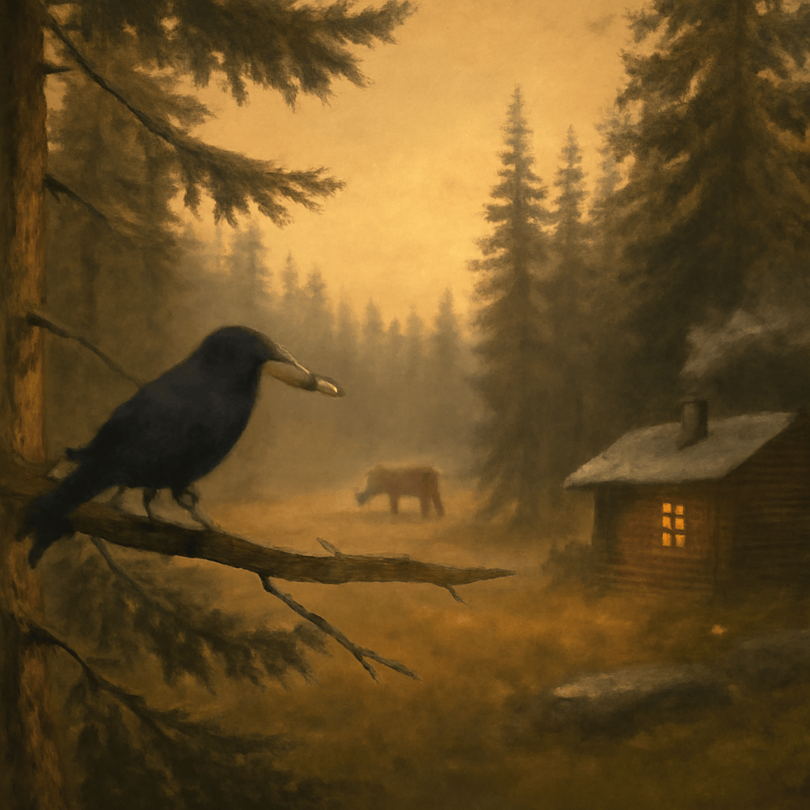

2025/09/08(月)
今日は森の中でカラスをじっと眺めておったんじゃ。あの黒い羽根が光にあたると、ほんのり青く輝くのがわかって感心したよ。賢そうな目で周りを見回し、枝をくわえて遊ぶ様子はなにかほっこりするものがあったのう。そんな自然の恵みを感じつつ、室内では初めて電子レンジに挑戦。蜂蜜を温めるのは簡単だったが、焦がさぬようそっと見守るのが肝心じゃな。掃除機の音にドキドキしつつも、部屋がすっきりする快感も味わったよ。夕暮れ時には石油ストーブにあたりながら、換気には気をつけてゆったりお茶を啜る。自然の中の静けさと家の中のぬくもり、どちらも大切にしておるんじゃ。明日は沢筋の散歩で体を休めるつもりじゃよ。自然と共に生きる日々に、感謝しつつのんびり過ごすのがワシの喜びじゃな。
